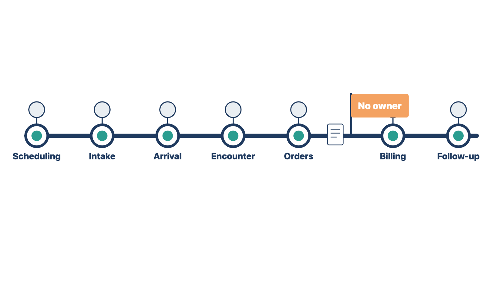
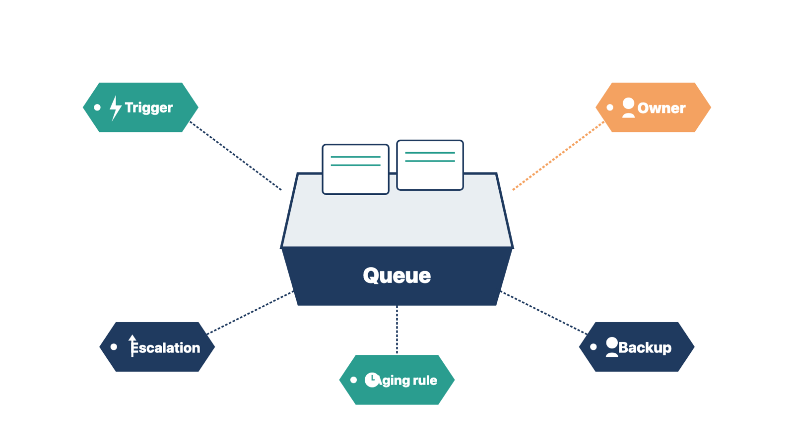

The parts were built and tested one module at a time. Problems now hide in the gaps between them, where a task leaves one team and no one picks it up.
By now the electronic health record (EHR) system is the practice's operational record. Work, reminders, follow-up, measures, and evidence no longer depend on one person's memory. People still own clinical, financial, security, and business judgment.
Walk the work from start to finish with the people who will run it. Use one patient journey:
inquiry or referral → scheduling → intake → identity → arrival → visit → documentation → orders or tasks → billing → payment → follow-up → records and reporting

At every step, ask:
Look for seams. A seam is a point where work passes between steps or teams. Examples:
Walk at least two normal journeys and two failure journeys, such as a lab interface outage and a patient with two records.
Rule: Every step in the journey has a named owner for the next action.
Example A. At Cedar Point main, you walk a referral from the fax queue to scheduling. The fax is filed, but no role owns the call to the patient. You ask the practice administrator to name one. Example B. At Lakeshore, you walk a lab interface outage. Paper results arrive, and nobody owns entering them. The nurse lead names a role and a backup. In both journeys, the gap was a step with no owner for the next action.
Check yourself
For a cloud EHR, the clinic's own equipment and network are among the most likely day-one failures. They usually belong to the clinic or its IT provider, so you must check them early enough for the owner to fix them.
With the clinic's information technology (IT) owner, visit every room where staff will use the system. Confirm that each of these works from each room:
Then test the backup internet connection. Unplug the main line, or have the IT owner switch it off, and confirm the system still works.
Record each failure with an owner and a fix date. Put open items on the readiness dashboard.
Compare two findings. At Cedar Point main, a scanner in the front office fails because a driver is missing. The clinic's IT provider fixes it in a day. At Lakeshore, Wi-Fi does not reach exam room 4. Fixing it needs new hardware, so the IT owner orders it and the clinic places a wired workstation in the room for now. In both cases the clinic's owner fixes the problem, and you record it.
Rule: Test every device and room with the clinic's IT owner, and record an owner for each failure.
Check yourself
A late change to reduce clicks can remove a safety check without anyone noticing. Simplify, but keep every required control.
Aim for a simple flow from start to finish. Look for:
Do not remove identity checks, permissions, privacy and security controls, clinical approvals, separation of financial duties, test-result follow-up, or audit evidence just to save clicks.
Record the reason for any late workflow change. Then rerun the affected setup tests, integrations, automation tests, training, and user acceptance before release.
Rule: Every late simplification keeps its controls and gets retested.
Example A. Front-desk staff enter the patient's phone number on two screens. The team removes the second field, keeps the identity checks, and reruns the registration tests. Example B. A billing supervisor asks to drop the second approval on patient refunds. That approval separates financial duties, so it stays. You record the request for the billing manager. Both requests aimed to save clicks. Only the one that kept every control could go ahead.
Check yourself
An alert that nobody owns is only noise. A queue with no aging rule can hide unfinished work for weeks.
For every queue, alert, notice, or reminder, record:
A reminder that cannot be closed makes it hard to tell unfinished work from old notices.
Check the volume under realistic conditions. A control that sends too many low-value alerts teaches users to ignore the important ones. The owner of each area approves its thresholds and escalation.

Rule: Every queue has an owner, a backup, an aging rule, and an escalation path.
Example A. Cedar Point's portal message queue has an owner, a backup, a 1-business-day aging rule, and an escalation to the nurse lead. When the owner is away, the backup works the queue. Example B. A family clinic's referral queue has an owner but no backup. During her week off, 40 referrals wait. You ask the practice manager to name a backup. In both clinics, the queue is safe only when someone covers it every working day.
Check yourself
A measure helps only if someone acts on it. And after go-live, the clinic can show improvement only if it measured where it started.
Choose measures that help run the system, not measures that only decorate a dashboard. Examples:
For each measure, define:
Clinical quality, payer, financial, and regulatory measures need a qualified person to define and review them. You make sure the approved definition is built correctly and can be traced to source data.
A baseline is the value of a measure before go-live. Capture the pre-live baseline for each agreed measure now. Use the same definitions you will use after go-live. If no baseline is possible, record that and the reason.
Without a baseline, the 30-, 60-, and 90-day reviews in Module 13 cannot show whether anything improved.
Rule: Capture each measure's baseline before go-live, using the same definition you will use after.
Example A. Cedar Point measures front-desk minutes per new-patient check-in. Before go-live, the practice administrator times 20 check-ins. She uses the same start and stop points she will use after go-live. Example B. A pediatric clinic counts possible duplicate patient records. The old report matches on name and birth date. The new report uses the same rule, so the two counts can be compared. In both cases, the later review compares like with like.
Check yourself